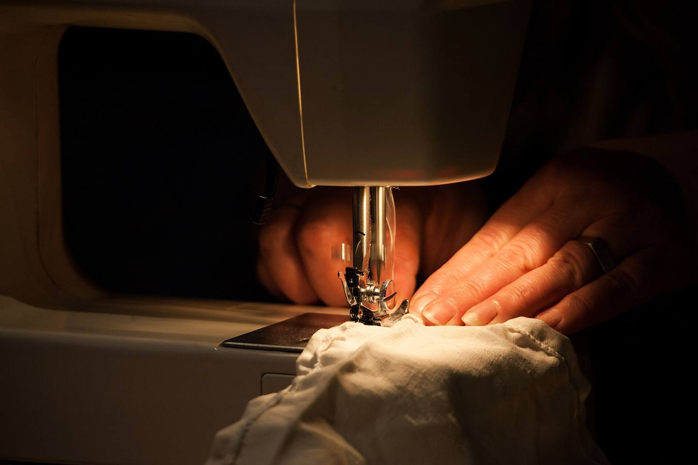
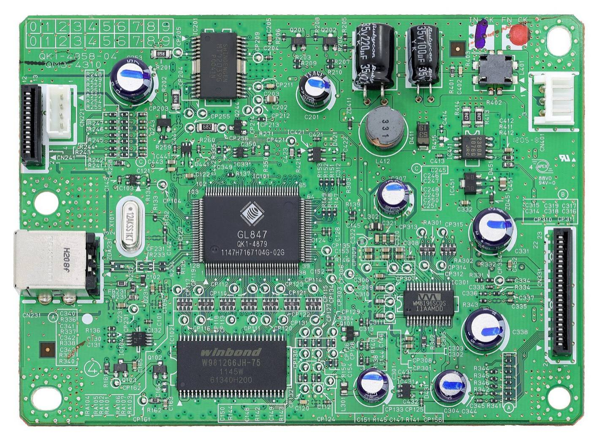

Sell the parts.Publish themanuals.
Five demands to electronics makers,
put to a vote on 12 March.

Five demands.
-
Sell the parts.
Parts for the machines people already own.
-
Publish the manuals.
The instructions that show how to fix them.
-
The other three demands, word for word
No part. No manual. No repair.
